CI/CD Pipeline for the 2048 Game
Overview
The goal of this CI/CD project is to deploy code using a fully automated pipeline. It creates a fully containerized version of the 2048 game. The pipeline automatically builds, tests, and deploys the application, not just once but every time you update the code using GitHub.
Steps
Before wiring the pipeline I verified my local AWS tooling from PowerShell on Windows.
-
AWS CLI version and logged-in identity
First I ran
aws --versionto confirm the CLI was installed and see which release I had. Then I ranaws sts get-caller-identityso I could see which IAM user or role and account the CLI was actually using before running anything else against AWS.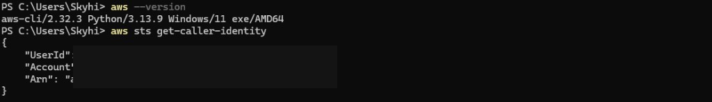
-
Creating the ECS compute permissions
In my codebase I added an
Awsfolder, aPoliciessubfolder inside it, and a JSON file namedtask-execution-assume-role.jsonthat defines the trust policy for the ECS task execution role (ECS tasks callingsts:AssumeRole).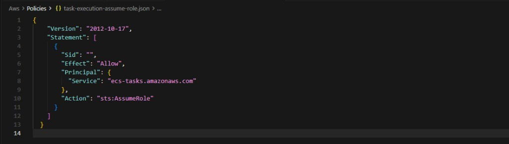
I opened the terminal in Cursor, moved into the
Aws/Policiesdirectory sofile://task-execution-assume-role.jsonresolved locally, and ran:aws iam create-role --role-name ecsTaskExecutionRole --assume-role-policy-document file://task-execution-assume-role.jsonBreaking it down:
aws iam create-roleasks IAM to create a new role.--role-name ecsTaskExecutionRoleis the name that role will have in your account.--assume-role-policy-document file://task-execution-assume-role.jsontells the CLI to read the trust policy from that file on disk, which is the JSON shown in the screenshot above (who is allowed to assume this role).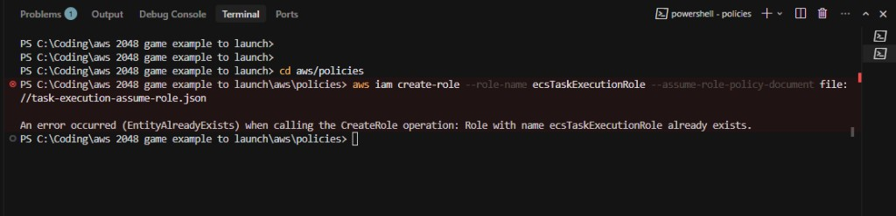
The call failed with
EntityAlreadyExists: an IAM role namedecsTaskExecutionRolealready existed in my account. I had created that standard ECS task execution role before through the AWS dashboard while working on another project, so this CLI command collided with the existing role instead of creating a new one. -
Granting permissions to the ECS role
Next I attached the AWS-managed ECS task execution policy to that role so ECS can perform the usual runtime tasks (for example pulling container images and sending logs). From the same terminal session I ran:
aws iam attach-role-policy --role-name ecsTaskExecutionRole --policy-arn arn:aws:iam::aws:policy/service-role/AmazonECSTaskExecutionRolePolicyBreaking it down:
aws iam attach-role-policytells IAM to attach a permissions policy to an existing role.--role-name ecsTaskExecutionRoleis the role receiving the policy.--policy-arn arn:aws:iam::aws:policy/service-role/AmazonECSTaskExecutionRolePolicyidentifies the managed policy by ARN (here an AWS-owned policy under the service-role path).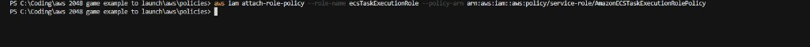
The command finished successfully:
attach-role-policyoften prints nothing when it works, so an immediate new prompt with no error text is what you want to see. -
Defining the CodeBuild trust policy
In the same
Aws/Policiesfolder I added another JSON file,codebuild-assume-role.json, with the trust policy that allows the CodeBuild service principal (codebuild.amazonaws.com) to callsts:AssumeRole. It follows the same shape as the ECS trust file:EffectAllow, a service inPrincipal, and the assume-role action.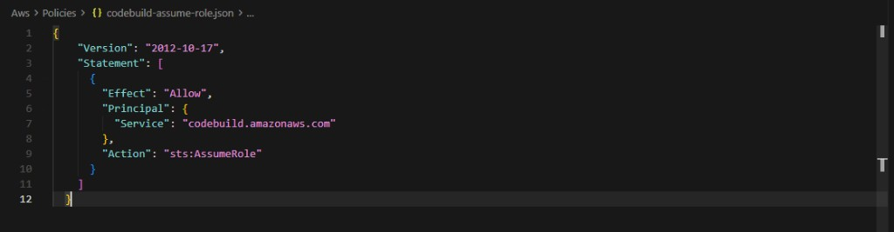
-
Creating the CodeBuild service role
With the trust policy file in place, I stayed in
Aws/Policiesand created a dedicated IAM role for this pipeline's CodeBuild projects:aws iam create-role --role-name codebuild-2048-service-role --assume-role-policy-document file://codebuild-assume-role.jsonBreaking it down:
aws iam create-roleasks IAM to create a new role.--role-name codebuild-2048-service-rolesets the role name in the account.--assume-role-policy-document file://codebuild-assume-role.jsonloads the trust policy from that local file (the CodeBuild policy from the previous step) so IAM knows which principal may assume the role.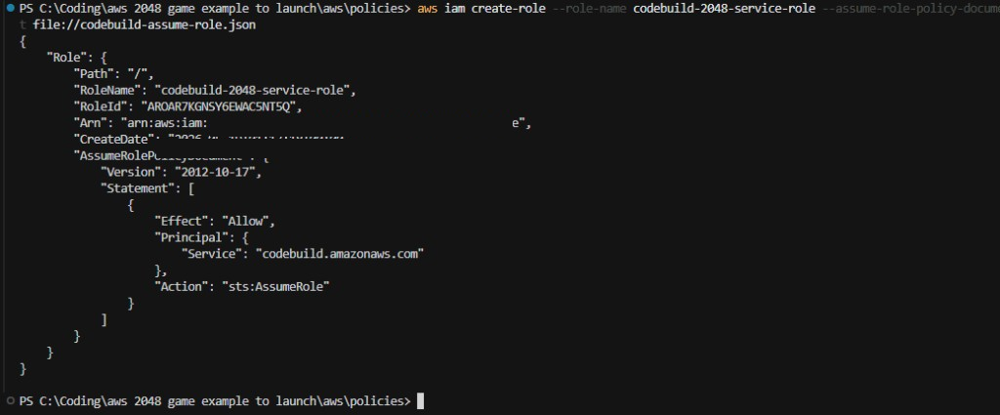
The command succeeded. The CLI printed a
Roleobject with fields such asArn,RoleId,CreateDate, andAssumeRolePolicyDocument. That last block should mirrorcodebuild-assume-role.json, which confirms IAM stored the trust relationship you intended before you attach build permissions to this role. -
Giving CodeBuild its operating permissions
The trust policy lets CodeBuild assume the role; the role still needs permission to actually run the build. In
Aws/PoliciesI added a permissions document (saved ascodebuild-permissions.json) that allows CloudWatch Logs actions for build output and ECR actions so the project can authenticate to the registry and push image layers.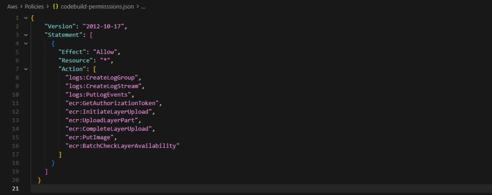
From that folder I ran:
aws iam put-role-policy --role-name codebuild-2048-service-role --policy-name CodeBuildAppPolicy --policy-document file://codebuild-permissions.jsonIn short:
aws iam put-role-policyadds or replaces an inline policy on a role.--role-name codebuild-2048-service-roletargets the CodeBuild role from the previous step.--policy-name CodeBuildAppPolicyis the name IAM uses for this inline policy.--policy-document file://codebuild-permissions.jsonreads the permission statements from that JSON file.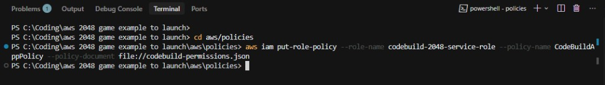
Like several other IAM write operations, a clean run returns no body text and drops straight back to the prompt when it succeeds.
-
Creating and defining the CodePipeline trust policy
CodePipeline needs its own IAM role as well. In
Aws/PoliciesI addedcodepipeline-assume-role.json, a trust policy that allows the CodePipeline service (codepipeline.amazonaws.com) to callsts:AssumeRole, same overall pattern as the CodeBuild and ECS trust files.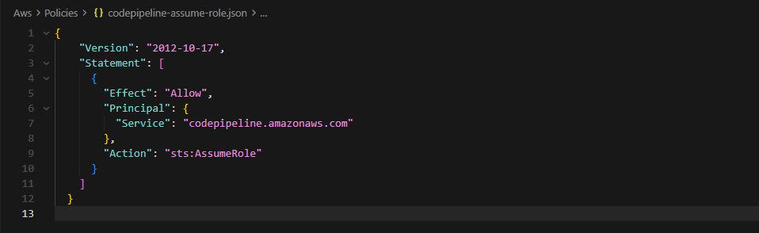
After saving that file I created the pipeline role from the same directory:
aws iam create-role --role-name codepipeline-2048-service-role --assume-role-policy-document file://codepipeline-assume-role.jsonBreaking it down:
aws iam create-rolecreates the IAM role.--role-name codepipeline-2048-service-roleis the role name in the account.--assume-role-policy-document file://codepipeline-assume-role.jsonapplies the trust policy from that JSON file so only the principals you defined can assume this role.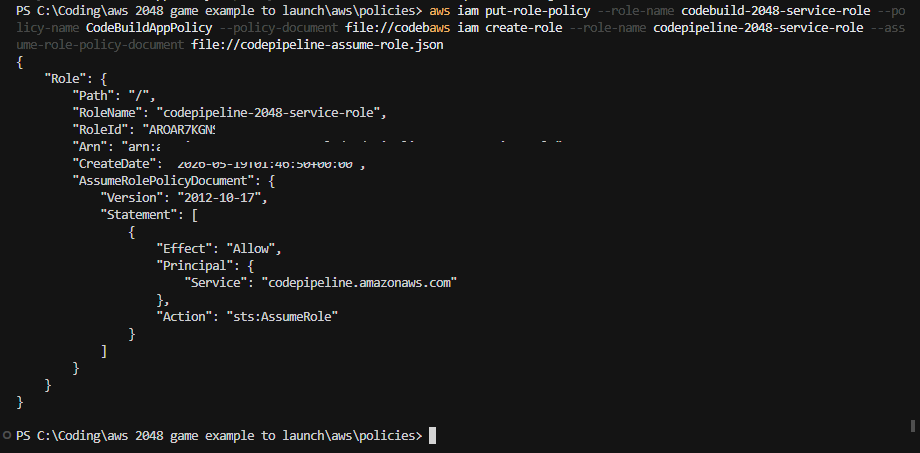
The CLI returned the new role metadata, including
AssumeRolePolicyDocumentreflectingcodepipeline-assume-role.json, which confirms the CodePipeline service principal is wired into IAM the way you expect before adding pipeline action permissions. -
Giving CodePipeline its permissions
Next I defined what the pipeline role is allowed to do at runtime. In
Aws/PoliciesI addedcodepipeline-permissions.json: it grants CodeBuild actions to start and inspect builds, ECS actions to register task definitions, describe services, and push updates, plusiam:PassRoleso the pipeline can hand ECS the roles it needs for task execution.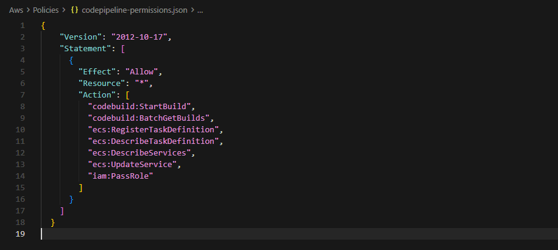
I applied it as an inline policy from the same folder:
aws iam put-role-policy --role-name codepipeline-2048-service-role --policy-name CodePipelineAppPolicy --policy-document file://codepipeline-permissions.jsonBriefly:
put-role-policyattaches or updates one inline policy on a role.--role-name codepipeline-2048-service-roleselects the CodePipeline role from the prior step.--policy-name CodePipelineAppPolicyis the name shown in IAM for this inline document.--policy-document file://codepipeline-permissions.jsonloads the allow rules from that JSON file.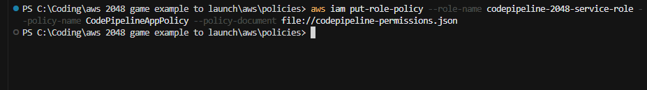
Success looks the same as with CodeBuild: no printed response, just the next prompt with no error text.
-
Creating the Amazon ECR repository
Still in
Aws/Policieswhere the terminal was already pointed, I created a private registry to hold the game container image:aws ecr create-repository --repository-name game-2048 --region us-east-1That calls the ECR
create-repositoryAPI:--repository-name game-2048sets the repo name, and--region us-east-1pins which Regional endpoint (and ARN prefix) you are using. On success the CLI prints JSON includingrepositoryUri, which is what you reference when you tag and push an image and when ECS pulls by image digest or tag.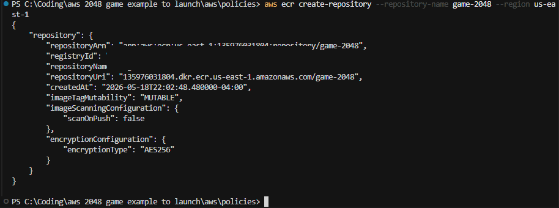
I copied the
repositoryUrifrom that output into the next file so the task knows which image to run (typically with a tag such as:latestonce the pipeline pushes). -
Telling ECS how to run the game
For the task definition I stepped out of
Policiesinto the parentAwsfolder and addedtask-definition.json. It describes a Fargate task (requiresCompatibilitiesFARGATE,networkModeawsvpc), CPU and memory, the ECS task execution role ARN, one container pointing at the ECR image URI with:latest, port80, andawslogsconfiguration so build and runtime logs land in CloudWatch.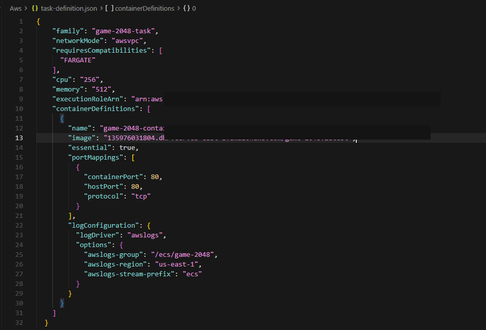
-
Registering the task definition via the CLI
With
task-definition.jsonsaved next toPolicies, I rancd ..so the shell was in the mainAwsfolder where that file lives (not insidePolicies). Then I registered it with ECS:aws ecs register-task-definition --cli-input-json file://task-definition.jsonregister-task-definitiontells ECS to store a new revision of the task family described in your JSON. The--cli-input-json file://task-definition.jsonflag loads the whole document from disk instead of passing dozens of separate CLI arguments, so what you validated in the editor is exactly what ECS registers.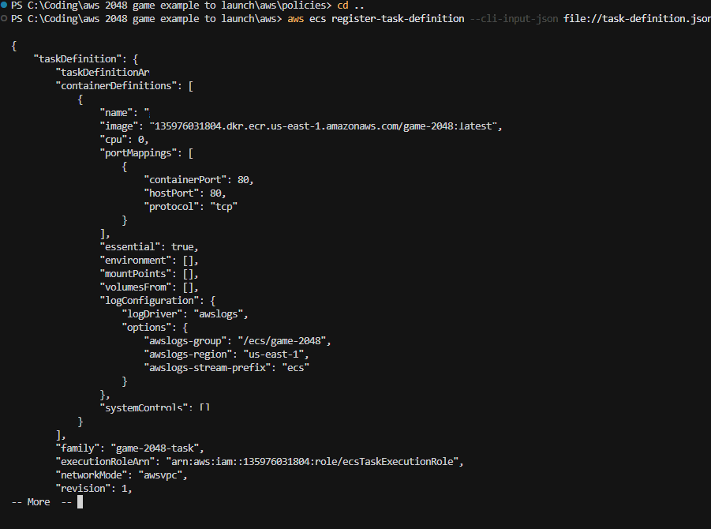
The response echoes the registered task definition, including
taskDefinitionArnand the revision number (:1on the first register), which you later reference when creating or updating a service. -
Setting up compute and build infrastructure by creating an ECS cluster
Still in the main
Awsdirectory, I provisioned a cluster that will host the Fargate tasks for the game once an image exists in ECR and a service points at this cluster:aws ecs create-cluster --cluster-name game-2048-cluster --region us-east-1create-clusterallocates the ECS-level grouping resource (your tasks and services run inside it).--cluster-name game-2048-clustersets the human-readable name you use in later CLI calls and the console.--region us-east-1keeps the cluster in the same Region as the task definition and ECR repo so ARNs and networking stay consistent.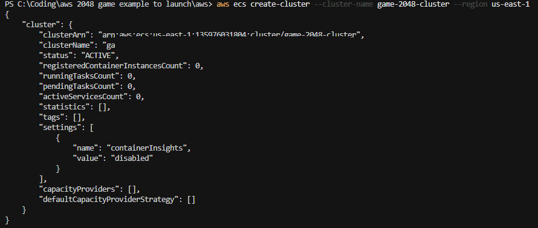
A fresh cluster shows zero running tasks and zero services until you define a service or run a task;
ACTIVEonly means the cluster resource itself is ready. -
Creating a CloudWatch log group
In
task-definition.jsonthe container uses theawslogsdriver withawslogs-groupset to/ecs/game-2048. Unlike some console flows that create log groups for you, working from the CLI meant creating that log group myself first. If it is missing, the task often fails to start when ECS tries to open a log stream under a group that does not exist yet.aws logs create-log-group --log-group-name /ecs/game-2048 --region us-east-1This calls the CloudWatch Logs
create-log-groupAPI:--log-group-namemust match the group name in the task definition, and--region us-east-1creates it in the same Region where the task runs.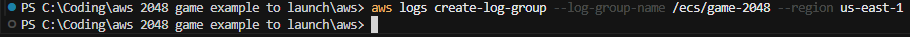
As with several other write APIs, success usually means no body text and an immediate new prompt.
-
Telling AWS CodeBuild how to build the container image
In the main
Awsfolder I addedcodebuild-project.json. It names the projectgame-2048-build, wires in thecodebuild-2048-service-roleservice role, and setssourceandartifactstoCODEPIPELINEso CodePipeline owns checkout and output passing. The environment uses the Amazon Linux 2 CodeBuild standard image on a small instance,privilegedModeenabled so Docker can build images, plus plaintext variables such asAWS_ACCOUNT_IDandIMAGE_REPO_NAMEfor the buildspec or inline commands to tag and push to ECR.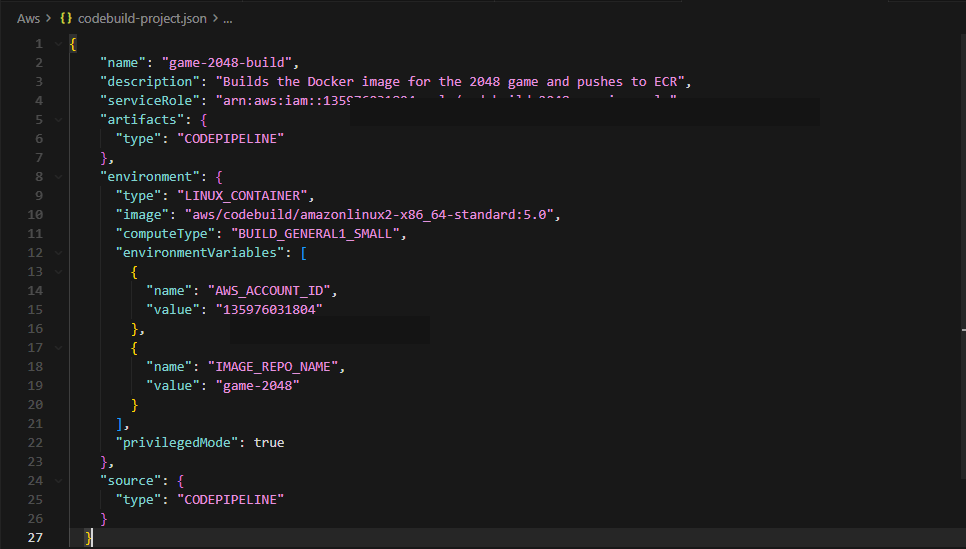
I registered that specification with CodeBuild:
aws codebuild create-project --cli-input-json file://codebuild-project.json --region us-east-1create-projectcreates the CodeBuild project resource from your JSON.--cli-input-json file://codebuild-project.jsonsends the full document as the API payload, and--region us-east-1pins the project to the same Region as the rest of this setup.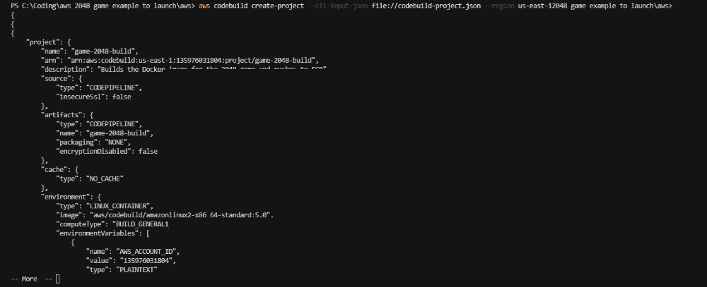
The CLI echoes the project metadata (name, ARN, environment, and so on); paginated output may pause with a pager until you exit.
-
Creating the GitHub connection path
To pull source from GitHub inside CodePipeline you need a CodeStar Connection to GitHub. I started one from the CLI:
aws codestar-connections create-connection --provider-type GitHub --connection-name github-2048-conn --region us-east-1create-connectionregisters a new connection resource.--provider-type GitHubselects GitHub as the host.--connection-name github-2048-connis the friendly label shown in the console.--region us-east-1stores the connection metadata in that Region. The JSON response includes aConnectionArnyou copy into the pipeline definition shortly afterward.The CLI stops short of finishing GitHub authorization (there is no interactive OAuth flow from the terminal in this setup), so I opened the AWS console, finished the pending connection, and approved access through the GitHub side until the connection showed as Available.
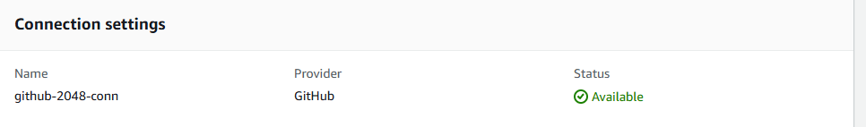
-
Adding the pipeline.json file
Next I described the pipeline itself as JSON beside the other IaC-style files in the main
Awsfolder.pipeline.jsonnames the pipelinegame-2048-pipeline, attaches thecodepipeline-2048-service-roleIAM role, and sets an S3artifactStorefor passing build inputs and outputs between stages.The
stagesarray wires three phases together: aSourceaction usingCodeStarSourceConnectionagainst my GitHub repojoshofficial101/aws-project-2048-launchonmain, using theConnectionArnfrom the CodeStar connection step; aBuildaction that runs thegame-2048-buildCodeBuild project on the source artifact and emits a build artifact; and aDeploystage that continues in the same file with an ECS deployment action so the new image reaches the cluster.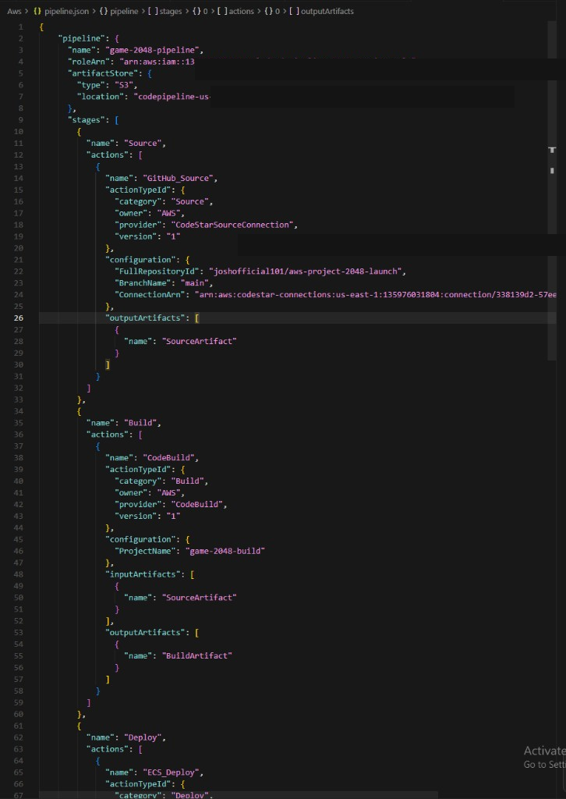
-
Running the CLI command to create the pipeline
With
pipeline.jsonsaved underAws, I tried to register the pipeline:aws codepipeline create-pipeline --cli-input-json file://pipeline.json --region us-east-1That calls the CodePipeline
CreatePipelineAPI:--cli-input-json file://pipeline.jsonuploads the full structure you authored, and--region us-east-1creates it in the same Region as the CodeBuild project and connection.AWS rejected it with
InvalidStructureExceptionwhile validating the artifact bucket named inartifactStore(codepipeline-us-east-1-…style name). That bucket did not exist yet in my account. CodePipeline relies on that S3 bucket as shared storage between stages (for example packaging what comes out of the GitHub source action and passing build outputs along to deploy), so pointing at a missing bucket fails validation before the pipeline is created.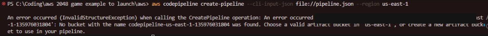
-
Fixing the missing S3 bucket
The bucket name in
pipeline.jsonhas to exist before CodePipeline can use it. I created it explicitly so it matched thatartifactStore.locationvalue:aws s3api create-bucket --bucket codepipeline-us-east-1-135976031804 --region us-east-1s3api create-bucketprovisions an empty bucket with the given global name. Using the same Region flag keeps it aligned with the pipeline and avoids mismatched Regional endpoints. Once it exists, CodePipeline can drop stage artifacts there (what the source action exports, what CodeBuild consumes and produces, and what downstream deploy actions read), rather than failing validation up front.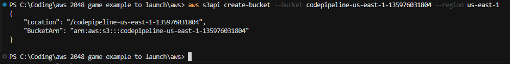
I then reran the pipeline creation command from the same
Awsdirectory:aws codepipeline create-pipeline --cli-input-json file://pipeline.json --region us-east-1This time it succeeded: the CLI printed the pipeline JSON (name, role, artifact store pointing at the new bucket, stages starting with Source), and paginated output could pause on
-- More --until dismissed.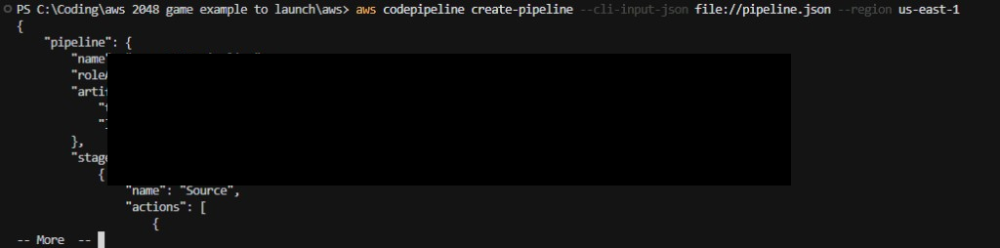
-
Creating the buildspec.yml file
"The buildspec.yml file is the automated recipe book for AWS CodeBuild. It provides the line-by-line operating instructions"
I added
buildspec.ymlat the root of the GitHub repo that CodePipeline checks out. Version0.2runspre_buildcommands to log in to ECR using$AWS_ACCOUNT_ID, builds and tags the image with$IMAGE_REPO_NAME, pushes to the registry, then writesimagedefinitions.jsonfor the ECS deploy action and lists that file underartifacts. The steps that follow launch the ECS service the pipeline deploys to, then document the Dockerfile in that same directory thatdocker builduses.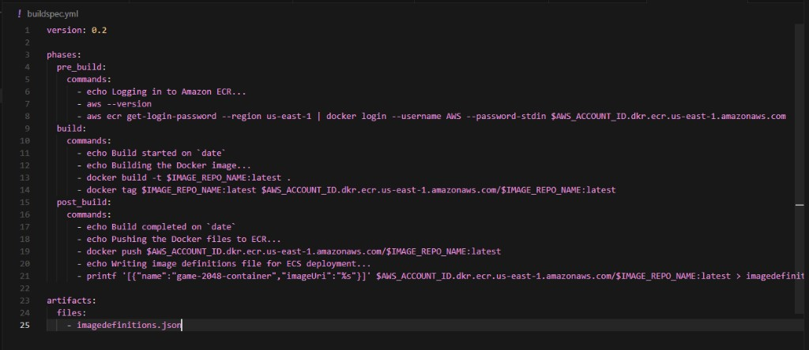
-
Launching the ECS Service
Running the following commands acted as a network locator so I could gather subnet and security group identifiers for the larger
aws ecs create-servicecommand.# 1. Grab your subnet IDs aws ec2 describe-subnets --query "Subnets[*].SubnetId" --output text # 2. Grab your default security group ID aws ec2 describe-security-groups --group-names "default" --query "SecurityGroups[*].GroupId" --output textThen I plugged those values into this PowerShell template (replacing the placeholders with real subnet IDs and the security group ID):
aws ecs create-service ` --cluster game-2048-cluster ` --service-name game-2048-service ` --task-definition game-2048-task ` --desired-count 1 ` --launch-type FARGATE ` --network-configuration "awsvpcConfiguration={subnets=[PASTE-SUBNET-1,PASTE-SUBNET-2],securityGroups=[PASTE-SG-ID],assignPublicIp=ENABLED}" ` --region us-east-1 -
Building the Dockerfile
I created a
Dockerfilewithin the main codebase and added the following production-ready Nginx configuration (nginx:alpine, copy static assets into/usr/share/nginx/html/, expose80).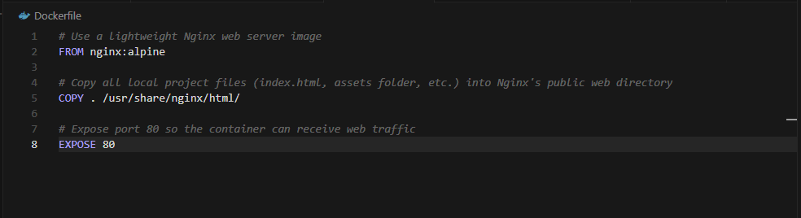
-
Pushing everything to GitHub
Last, I moved to the repository root (from
AwsI usedcd ..), staged the infrastructure files,buildspec.yml, and theDockerfile, committed them, and pushedmainso the CodePipeline source stage would pick up the same revision GitHub now holds.git add .git commit -m "feat: add AWS infrastructure blueprints and buildspec configuration"git push origin maingit add .stages every tracked change in the tree,git commitsaves that snapshot with a message, andgit push origin mainpublishesmainto GitHub so the GitHub source action on the pipeline has material to pull on the next run.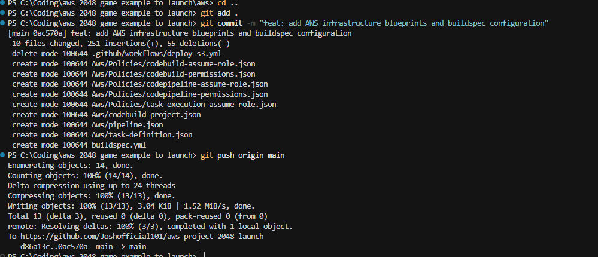
Verifying the project
While verifying the project I first checked the status of AWS CodePipeline. In the failed action details I saw this error:
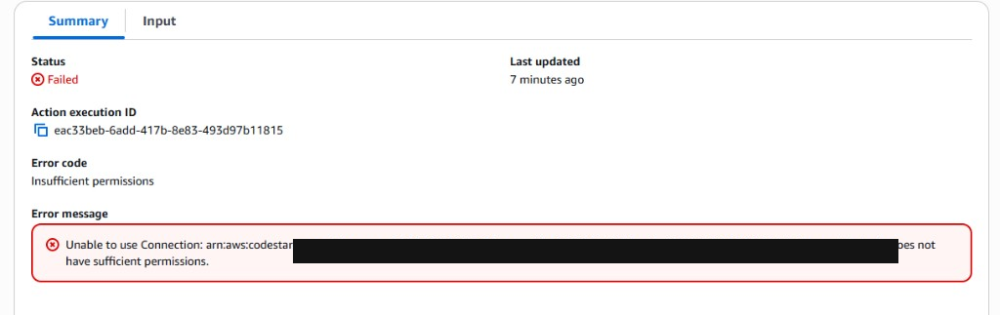
That means the CodePipeline service role was trying to use the GitHub CodeStar connection for the source stage, but IAM had not explicitly allowed it to call that API on the connection.
I reopened Aws/Policies/codepipeline-permissions.json and added the missing action codestar-connections:UseConnection alongside the existing CodeBuild, ECS, and iam:PassRole statements.
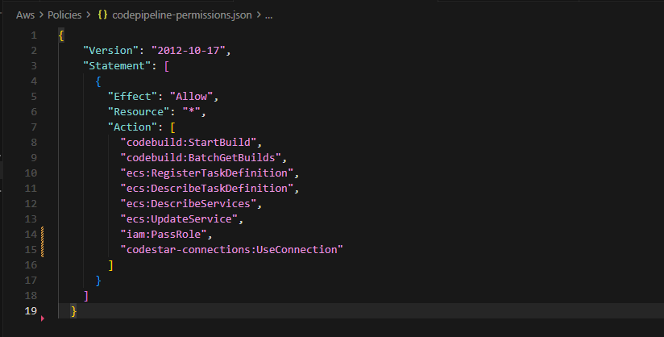
To push that updated inline policy to IAM I moved into the policies folder and reapplied it:
cd Aws/Policies
aws iam put-role-policy --role-name codepipeline-2048-service-role --policy-name CodePipelineAppPolicy --policy-document file://codepipeline-permissions.json
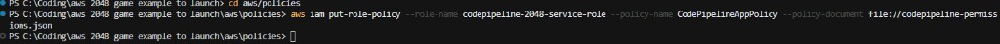
After that connection permission was fixed, the pipeline surfaced a different failure: the CodePipeline service role still could not write source output into the S3 bucket used as the artifact store (or read objects back when later stages need them).
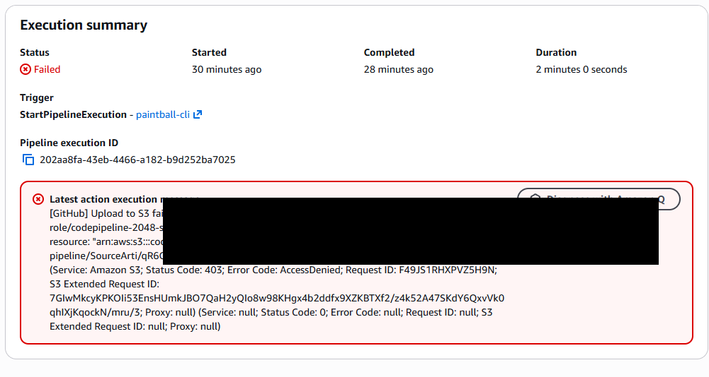
In practice that meant the role assumed during the source action lacked s3:PutObject (and related read APIs) on the artifact bucket prefix CodePipeline uses under the hood.
I edited Aws/Policies/codepipeline-permissions.json again and appended:
"s3:PutObject", "s3:GetObject", and "s3:GetObjectVersion"
still scoped with "Resource": "*" in this document (you can tighten that to the artifact bucket ARN later if you prefer least privilege).
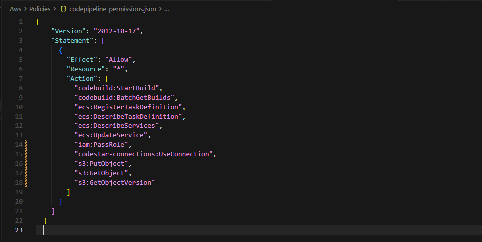
From Aws/Policies I pushed the same inline policy name back to IAM:
aws iam put-role-policy --role-name codepipeline-2048-service-role --policy-name CodePipelineAppPolicy --policy-document file://codepipeline-permissions.json
Once CodePipeline could fetch GitHub through the connection and write artifacts to S3, the build stage failed next: CodeBuild downloads the source bundle from that same artifact bucket during DOWNLOAD_SOURCE, and the CodeBuild service role did not yet have read access.
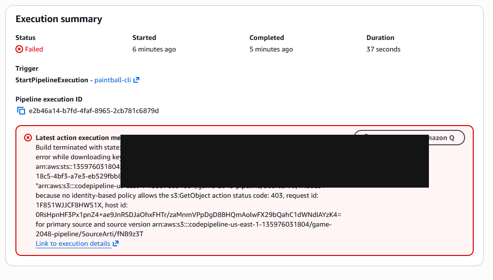
The console pointed at codebuild-2048-service-role lacking s3:GetObject on the staged object prefix under the CodePipeline artifact bucket.
I opened Aws/Policies/codebuild-permissions.json and added "s3:GetObject" and "s3:GetObjectVersion" next to the existing logs and ECR actions (still using "Resource": "*" here for simplicity).
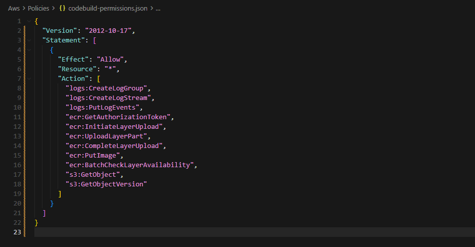
I reapplied the CodeBuild inline policy from Aws/Policies:
aws iam put-role-policy --role-name codebuild-2048-service-role --policy-name CodeBuildAppPolicy --policy-document file://codebuild-permissions.json
With S3 reads working for CodeBuild, the next failure showed up in the build phase: docker build exited non-zero. CodeBuild shares outbound pulls with other customers, so after some reading I tied it to Docker Hub rate limits on anonymous pulls when the Dockerfile used FROM nginx:alpine (Docker Hub returned HTTP 429 "too many requests" in the logs).
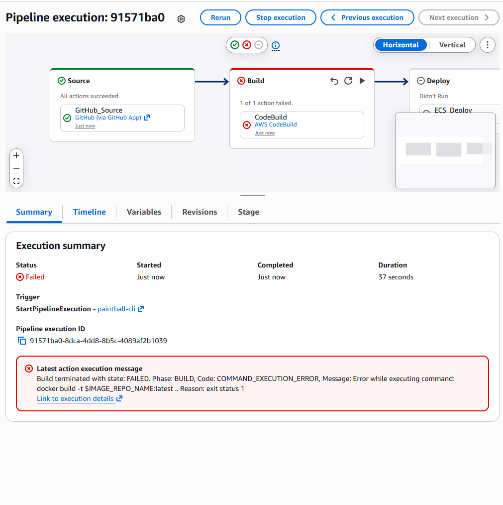
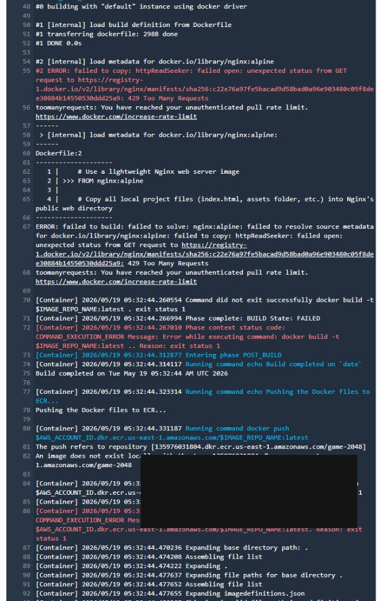
To avoid pulling that base image through Docker Hub during CI, I pointed FROM at the Amazon public mirror on ECR Public instead (public.ecr.aws/nginx/nginx:alpine) and kept the same copy and expose steps.
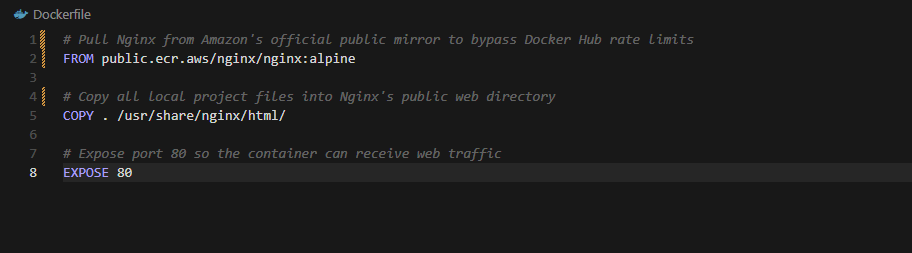
After committing that Dockerfile change I pushed main again so the pipeline could retry against fresh GitHub revision:
git add Dockerfile
git commit -m "fixed docker file with rate limit"
git push origin main
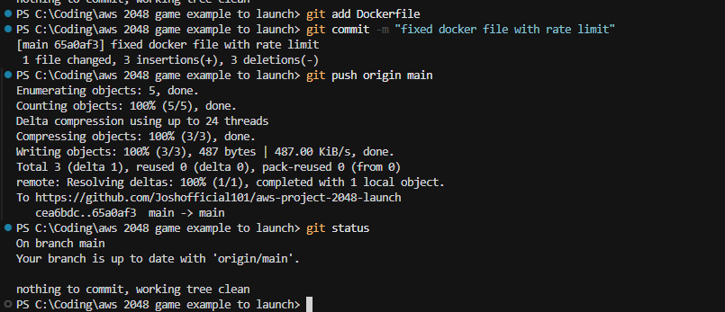
After the image built successfully, the build action failed again at the very end during UPLOAD_ARTIFACTS: CodeBuild must write outputs (such as imagedefinitions.json) back into the pipeline's S3 artifact bucket. The role already had S3 read access for downloads, but not put permission for those uploads.
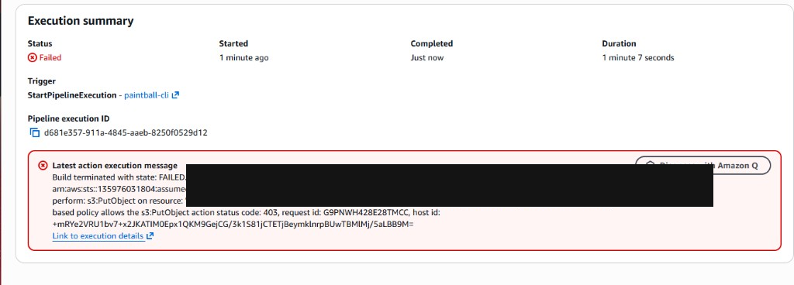
I edited Aws/Policies/codebuild-permissions.json again and added "s3:PutObject" alongside the existing S3 get actions, logs, and ECR permissions.
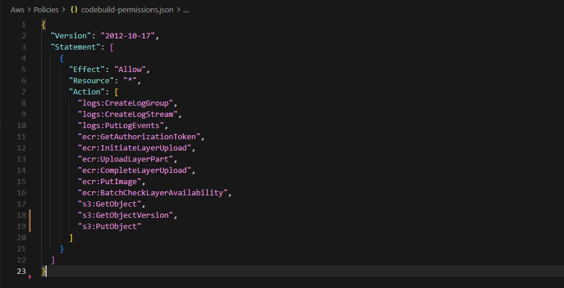
From Aws/Policies I reapplied the inline policy:
aws iam put-role-policy --role-name codebuild-2048-service-role --policy-name CodeBuildAppPolicy --policy-document file://codebuild-permissions.json
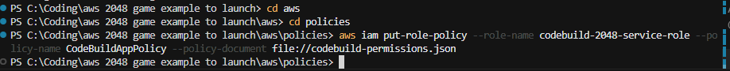
Another note while verifying end-to-end behavior: the security group attached to the ECS service tasks still needed an explicit inbound rule so browsers could reach Nginx on port 80. I opened TCP 80 from 0.0.0.0/0 on the group below (tighten that CIDR later if you only want a VPC or load balancer source).
aws ec2 authorize-security-group-ingress `
--group-id sg-0f8aab09ec0985d66 `
--protocol tcp `
--port 80 `
--cidr 0.0.0.0/0 `
--region us-east-1Project Verified
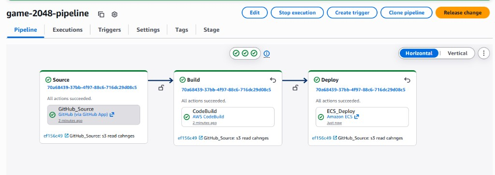
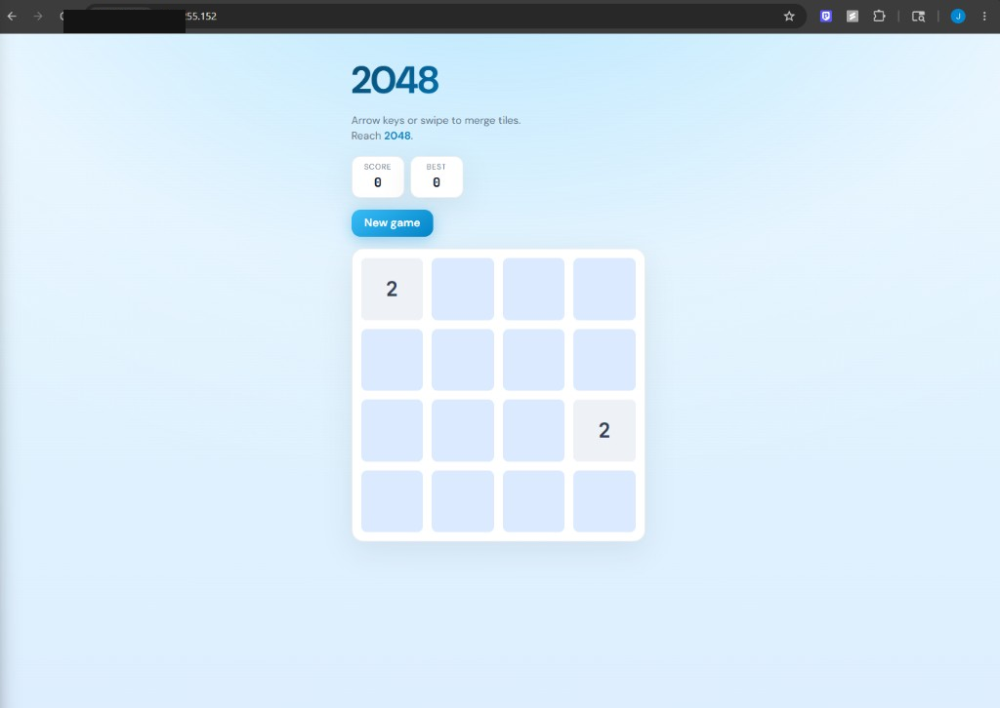
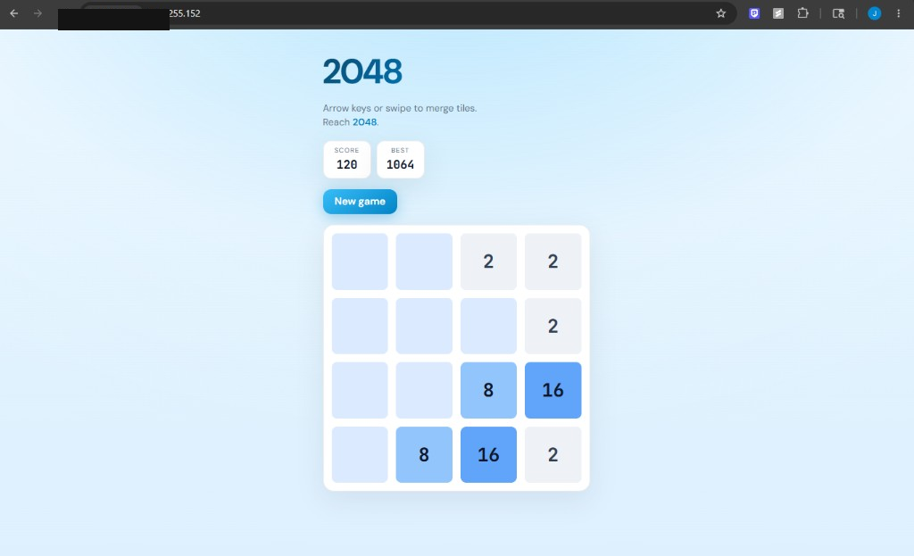